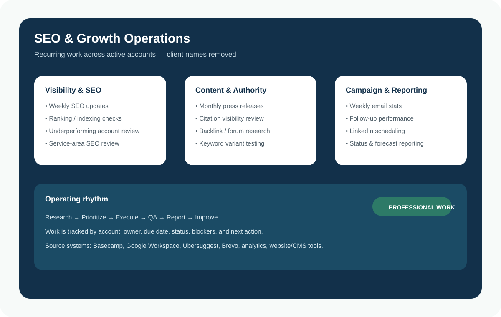
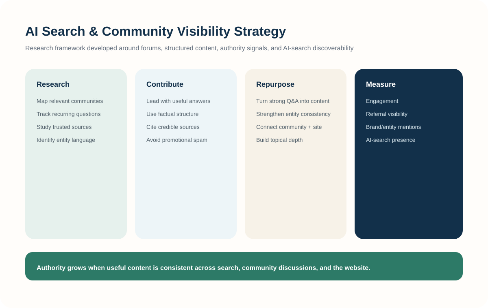

Professional work, research, and implementation.
This page brings together the strongest public-safe material from my marketing portfolio and recurring SEO work. Client-sensitive information is removed while the underlying workflows and responsibilities remain visible.
Recurring responsibilities and campaign work.
These visuals are sanitized from real responsibilities and source documents so the portfolio can show the work without exposing confidential account details.




Research, categorization, and opportunity review.
Examples from my keyword-research workflow, including prioritization, categorization, audience context, and competitive review.


From research to finished content.
Content work combines audience research, keyword inputs, factual sourcing, drafting, review, and final QA.


SEO strategy applied to a complete site.
The live IslaClean project shows how keyword thinking, page structure, local relevance, internal links, content, calls to action, and tracking-ready interactions connect on a working website.
IslaClean Palawan
10-page local-service website built around service intent, local search structure, content pathways, on-page SEO, and conversion paths.